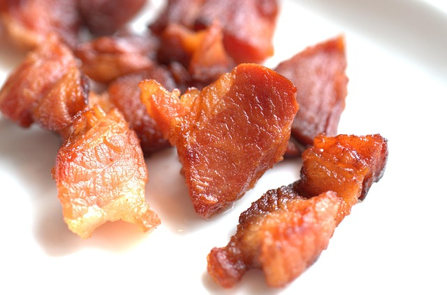

Bacon

Description
This is a recipe for making cooked bacon, a very quick and simple way of making a meat snack, like sausages are.
Ingredients
- 2 or 3 rashers of back bacon
Steps
- Add your bacon to your cold frying pan.
- Heat the pan over medium heat for about 3 minutes.
- Turn the bacon over and heat for another 3 minutes or so.
- Take the bacon out of the pan and drain with a paper towel.
- Eat the bacon.
Home